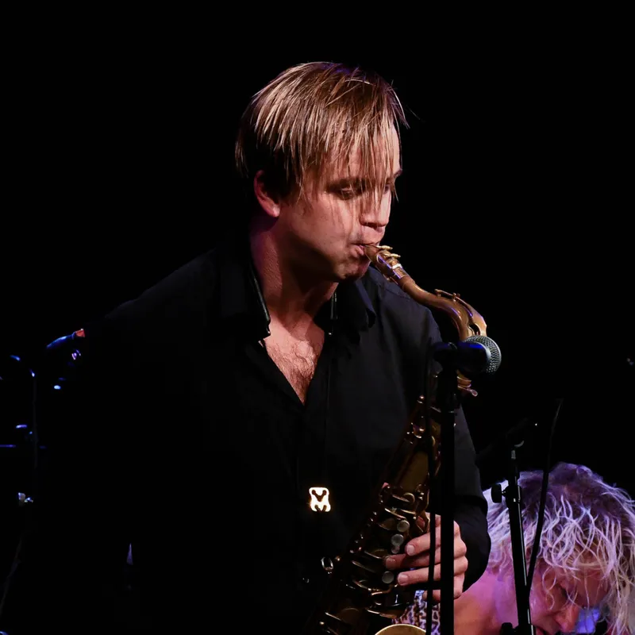

Marius Neset & Bergen Big Band
Virtuos saksofonist og komponist møter et av Norges ledende storband – bestillingsverk, album og turné.
Bergen Big Band kunne i 2021 feire 30 år. Jubileet resulterte i et samarbeid med den genierklærte saksofonisten og komponisten, Marius Neset, som skrev et bestillingsverk for orkesteret for anledningen. Et verk som fikk fantastisk mottagelse og svært gode kritikker.
Nå tas samarbeidet videre med utgivelse av et nytt album, januar 2026. Deretter er planen turné i Skandinavia, og på det europeiske kontinentet samme år.
Neset har alltid med seg sin rytmiske sjelevenn fra studietiden, den norsk-svenske trommekunstneren, Anton Eger. Marius beskriver da også bestillingsverket som festmusikk preget av optimisme og positivitet, og i stor grad basert på denne duoens helt spesielle rytmiske univers. Neset sier:
«Etter å ha gjort mange prosjekter i inn- og utland med orkestre som London Sinfonietta, Tapiola Sinfonietta, Basel Sinfonietta, National Orchestra of Belgium, Trondheim Jazzorkester, KORK og mange flere, er det veldig spesielt for meg å komme hjem til Bergen og skrive ny musikk for Bergen Big Band.»
I løpet av få år har Neset utviklet seg til å bli en av de mest kritikerroste og anerkjente komponistene i Europa. Den sterkt prisbelønte musikeren, med sine utrolige polyrytmer, har redefinert saksofonens rolle som ledende instrument i orkestersammenheng.
Bergen Big Band er et av Norges ledende profesjonelle storband som har opptrådt på flere av verdens største jazzfestivaler, som for eksempel København, London og Montreal. At internasjonale stjerner som for eksempel Diana Krall, Chris Potter, Terje Rypdal og Maria Schneider har valgt orkesteret vitner også om kvalitet og attraktivitet.
I en anmeldelse av orkesteret og Marius Neset etter en konsert i Oslo, skriver Tor Hammerø: «Norge har så avgjort fått en ny saksofonist og komponist i verdensklasse og Bergen har fått et storband som leverer vanskelig, men flott musikk på skyhøyt nivå. Langvarig trampeklapp etter låt nummer to, sier det meste.»
Foto: Stein Hødnebø